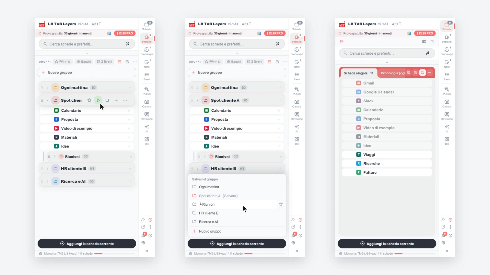
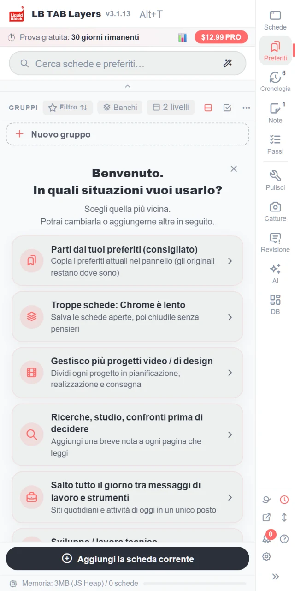
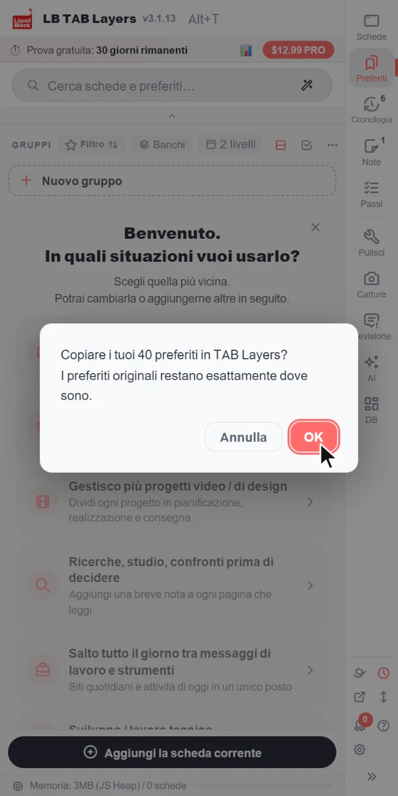
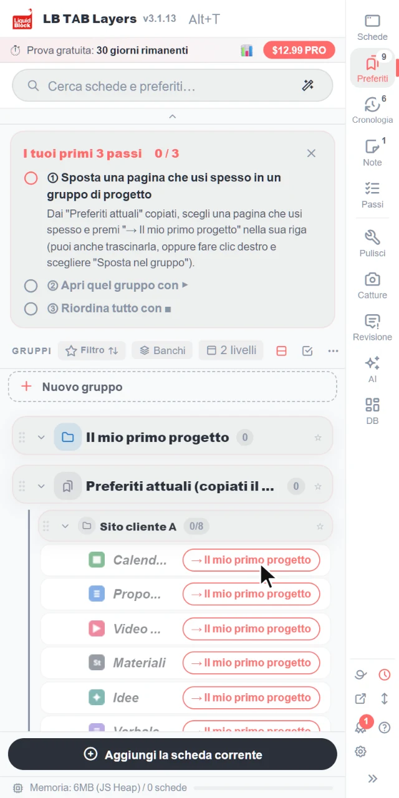
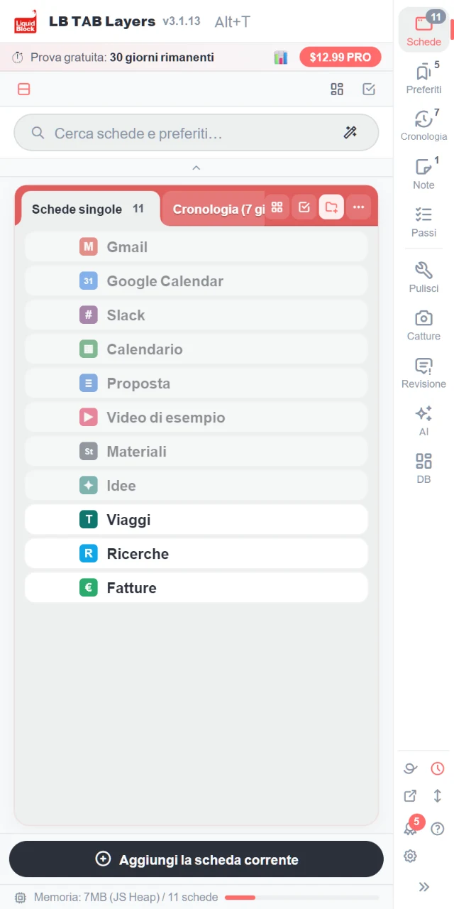
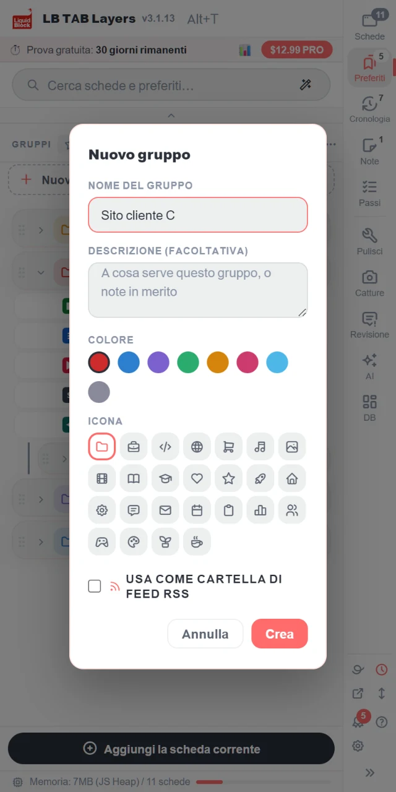
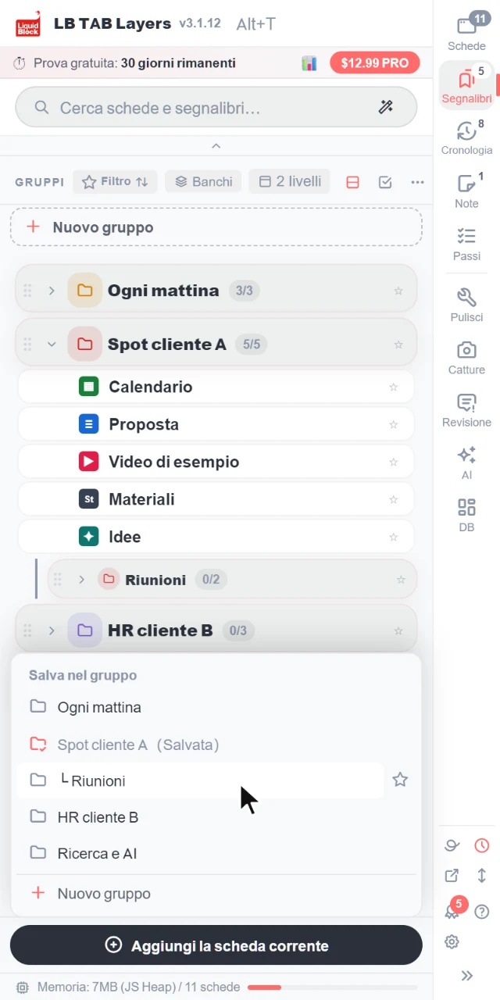
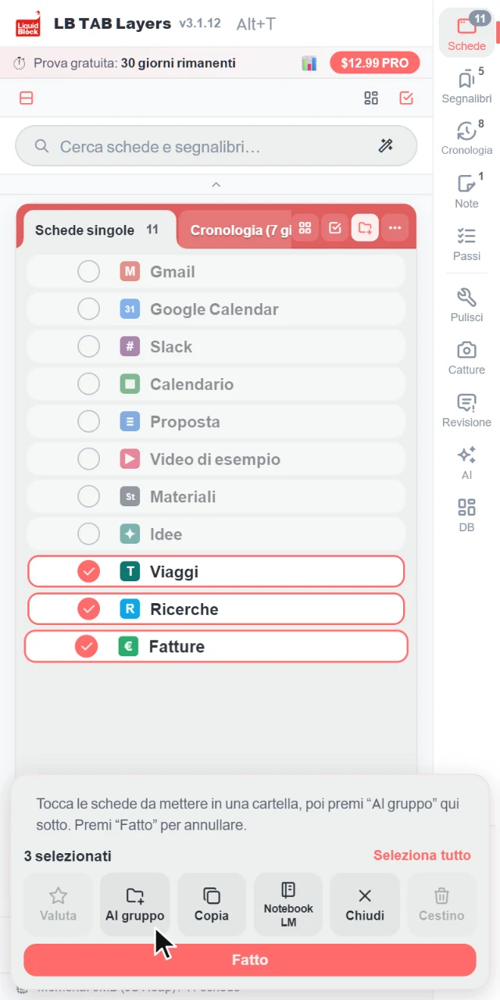
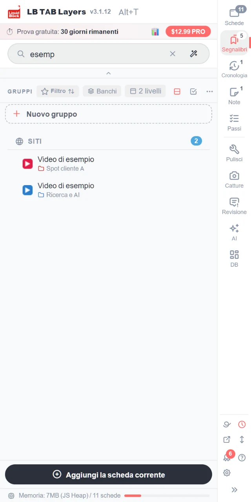
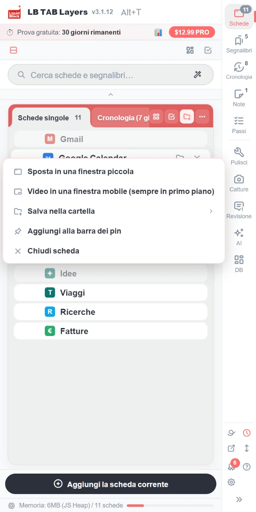

Premi Alt+T (Option+T su Mac) per aprire LB TAB Layers. All’inizio ti servono solo tre cose: salva la scheda su cui ti trovi con Aggiungi la scheda corrente, apri un intero gruppo con ▶ e richiudilo con ■. Tutto quello che salvi resta nei segnalibri di Chrome, quindi lo ritrovi anche dopo aver chiuso le schede o riavviato Chrome.
Grazie per aver installato LB TAB Layers. In questa pagina trovi solo quello che ti serve nei primi cinque minuti.
L’idea è semplice. Le schede sono l’«adesso»: ciò a cui stai lavorando. I segnalibri sono il «dopo»: ciò a cui tornerai. La cronologia di oggi è il «registro» di quello che hai visto. Con LB TAB Layers passi dall’uno all’altro in un unico pannello laterale.
💡 Premi Alt+T (Option+T su Mac) per aprirlo quando vuoi. Puoi anche fare clic sull’icona di LB TAB Layers nella barra degli strumenti. Se non vedi l’icona, fai clic sull’icona a forma di pezzo di puzzle e poi sulla puntina accanto a LB TAB Layers per fissarlo.
Per prima cosa: porta in TAB Layers i segnalibri che hai già (consigliato)
Se in Chrome hai già cartelle di segnalibri (Chrome li chiama «Preferiti»), portarle subito in TAB Layers è il modo più rapido per cominciare. Non serve creare nuovi gruppi: le tue cartelle diventano gruppi per progetto o per argomento, in ordine nel pannello laterale.
Fai clic su «Parti dai tuoi segnalibri (consigliato)»
È in cima alla schermata di benvenuto che compare subito dopo l’installazione. Puoi aprirla anche più tardi da Impostazioni → Dati → Segnalibri, oppure con «Importa segnalibri» nella parte alta della dashboard a schermo intero.

Scegli le cartelle che usi di più (una decina per cominciare)
Vedi l’elenco delle tue cartelle di segnalibri di Chrome. Spunta quelle che usi spesso. Un contatore come «3 / 10» indica quante ne hai scelte. Non serve prenderle tutte: è anche una buona occasione per capire quali segnalibri usi davvero.

Spunta «Ho capito che le cartelle verranno spostate» e spostale
Le cartelle vengono spostate nella cartella «LB TAB Layers» dei segnalibri di Chrome. Non viene eliminato nulla e il contenuto resta lo stesso. Non le vedrai più nella posizione di prima (per esempio nella barra dei preferiti), ma puoi riportarle indietro quando vuoi con «Riporta indietro», nella stessa pagina.
Compaiono come gruppi nel pannello laterale
Ogni cartella diventa un gruppo e le sue sottocartelle diventano sottogruppi. Fai clic su ▶ accanto a un gruppo per aprire tutte le sue pagine in una volta.

1. Come orientarti
Lungo il bordo del pannello c’è una colonna di pulsanti: Schede, Segnalibri, Cronologia, Note e Passi. Fai clic su uno di questi per passare a quella vista. I numeri piccoli indicano, per esempio, quante schede hai aperte o quanti gruppi hai.
- Schede — le schede aperte in questo momento che non hai ancora salvato da nessuna parte
- Segnalibri — le schede che hai salvato, raccolte in gruppi, uno per progetto
- Cronologia — le pagine che hai visitato oggi, comprese quelle che non hai salvato
- Note e Passi — appunti per il tuo lavoro ed elenchi da spuntare un passo alla volta
Sotto la linea di separazione ci sono gli strumenti. Il primo giorno non ti servono.

2. Le basi
Crea un gruppo
Nella vista Segnalibri, fai clic su + Nuovo gruppo, in cima all’elenco. Dagli il nome di un lavoro, per esempio «Sito cliente C» o «Ogni mattina». La cosa che funziona meglio è un gruppo per ogni progetto.

Salva la scheda su cui ti trovi
Fai clic su Aggiungi la scheda corrente, in fondo al pannello, e scegli un gruppo. I gruppi che contengono già quella pagina sono contrassegnati con Salvata.

Salva più schede aperte in una volta
Nella vista Schede, fai clic sul cerchio a sinistra di una scheda per iniziare a selezionare. Fai clic sui cerchi delle altre schede che ti interessano, poi su Al gruppo, in basso, e scegli un gruppo. Puoi anche trascinare le schede su un gruppo, una alla volta.

Apri tutto con ▶, chiudi tutto con ■
Passa il mouse su un gruppo e fai clic su ▶ per aprire tutte le sue schede. Si aprono insieme come gruppo di schede di Chrome, con lo stesso nome e lo stesso colore del tuo gruppo. Quando hai finito, fai clic su ■ per chiudere quel gruppo di schede in un colpo solo. Le schede salvate restano salvate.
Cerca
Scrivi nella casella di ricerca in alto per cercare contemporaneamente tra le schede aperte, le schede salvate e la cronologia di oggi. Qualche piccolo errore di battitura non è un problema.

3. Un modo semplice per organizzare il lavoro
Un gruppo per ogni progetto
Pensa a un gruppo come a una scrivania dedicata a un solo lavoro. Ci puoi organizzare tutta la giornata:
- La mattina — fai clic su ▶ sul progetto di oggi e riprendi da dove avevi lasciato
- Quando cambi attività — chiudi il progetto corrente con ■ e apri il successivo con ▶
- A fine giornata — basta un clic su ■. Domani ▶ riporta tutto com’era
I siti di tutti i giorni nella barra dei pin
Per i siti che apri ogni giorno, come la posta o il calendario, fai clic destro su una scheda o su un segnalibro e scegli Aggiungi alla barra dei pin. Restano come piccole icone nella parte alta del pannello e si aprono con un clic (fino a 12). Puoi anche trascinarli lì.

Una finestra per ogni progetto
Fai clic destro su un gruppo e scegli Apri in una nuova finestra per aprirlo come gruppo di schede in una finestra separata. È comodo quando lavori a due cose insieme o usi un secondo monitor.
Hai dimenticato di salvare qualcosa? È nella cronologia di oggi
Non serve salvare tutto. Le pagine che non hai salvato restano in Cronologia, nell’ordine in cui le hai visitate oggi. Salva in un gruppo ciò che conta e chiudi il resto: quasi sempre basta questo.
🔒 Tutto quello che salvi resta nei segnalibri di Chrome. Le schede salvate rimangono lì anche se le chiudi o riavvii Chrome, e LB TAB Layers non invia i tuoi segnalibri da nessuna parte. I dati che stanno dentro l’estensione, come le note, si possono esportare dalle Impostazioni.
Trovi altre dieci azioni nella guida (in inglese).
Domande frequenti
Q. Come si apre LB TAB Layers?
Premi Alt+T sulla tastiera (Option+T su Mac). Puoi anche fare clic sull’icona di LB TAB Layers nella barra degli strumenti.
Q. Se disinstallo l’estensione, le schede salvate spariscono?
No. Le schede salvate restano nei segnalibri di Chrome, in cartelle con lo stesso nome dei tuoi gruppi. I dati che stanno dentro l’estensione, come le note, vengono eliminati: esportali prima dalle Impostazioni.
Q. Dove cerca la casella di ricerca?
Tra le schede aperte, tra le schede salvate nei tuoi gruppi e nella cronologia di oggi, tutto insieme.
Q. È gratis?
Sì. Con la versione gratuita puoi creare fino a 5 gruppi. La cronologia di oggi, i Passi, la dashboard e la ricerca con AI sono funzioni PRO, e per 30 giorni dall’installazione hai a disposizione tutte le funzioni.
Comincia da un solo progetto.
Aprilo con Alt+T, salva la scheda su cui ti trovi, apri con ▶ e chiudi con ■. Nessun account richiesto · Salvato nei segnalibri di Chrome · Tutte le funzioni gratis per 30 giorni
Aggiungi a Chrome gratis →